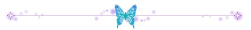

你的名字——沈理电协
从未约定
却有缘在此相遇
任时光匆匆
不敢轻言忘却
我们好像在哪儿见过 你记得吗
好像那是一个实验室
我去过
没有留意
我记得
我快忘了
我们好像在哪儿见过 你记得吗
嗯 在那个实验室

我不会在离开你
再也不会离开你
好不容易才终于
追上你的啊

与你的相遇
仿佛是久别重逢

“
从我们之间吹过的风，
带来一丝寂寞 ,
哭过之后仰望的天空 ，
十分的澄澈 。
”

“
总有一天
你的一切都会消失。
所以将你的一切
深深印入脑海 ，
不是我的权利
而是我的义务。
”
“
在雨停的瞬间 ，
在彩虹的起点和终点 ，
在生命的尽头有什么等着我
我一直这样坚信。
”

1
“
从这里开始就到我了
带着经验与知识 ，
以及生锈的勇气 ，
用前所未有的速度 ，
冲向你的身边 。
”
2
“
这未来有无数的困难 ，
我说过吧 ，
我们在这里一起一定能 ，
笑着度过难关的 。
”
只要记住你的名字
不管你在世界的那个地方
我一定会
去见你
沈理电协！
编辑：王宁